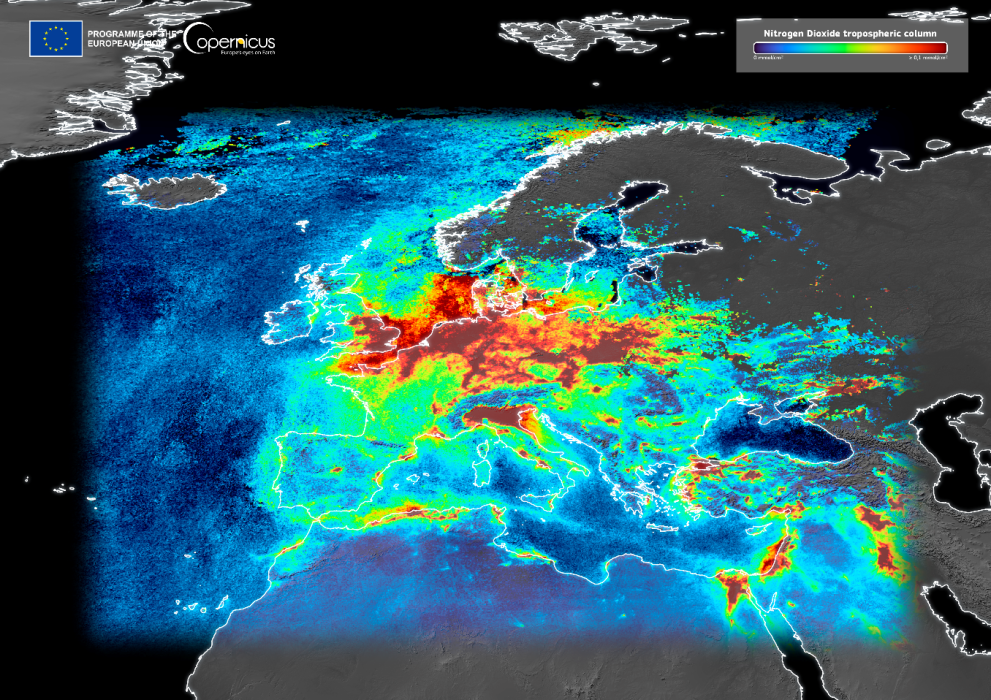
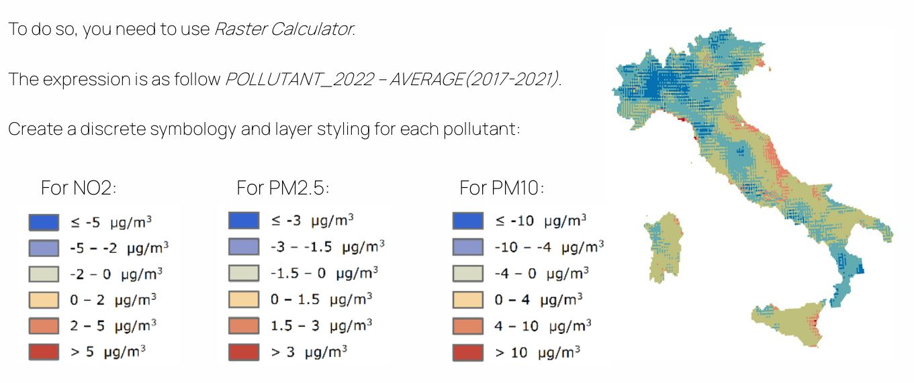

Technical Aspects
Platform Tools & Technologies
The AirAware platform is built using modern open-source technologies. The interactive map is powered by OpenLayers, which allows integration of geospatial data and tile services (such as OpenStreetMap) for real-time sensor mapping. The user interface is styled with Bootstrap 5, leveraging its grid system and components for a responsive layout. Charts and data visualizations are rendered via Chart.js (or similar libraries like ApexCharts) to display pollutant trends. The system integrates data from external sources (e.g., public APIs for air quality data, local sensor networks) and custom backend APIs. Server-side integration (e.g., with Node.js/Express or Python/Flask) retrieves and processes live data feeds, which are then consumed by the front-end through AJAX calls or WebSockets for dynamic updates.
CAMS NetCDF Monthly Aggregated Pollutants
For this project, we used validated ensemble reanalysis data from
CAMS to obtain NO2, PM2.5, and PM10 concentrations for
December 2022. After downloading the NetCDF and GeoTIFF files with
the required parameters, we loaded them into QGIS, assigned the
EPSG:4326 projection, and explored the time bands provided.
To focus on our case study area, we clipped the monthly aggregated rasters
using a mask layer, automating the process with the Run as Batch Process
tool and Autofill settings. The outputs were saved using a standardized
naming format (e.g., Italy_CAMS_no2_2022_12.tif), ready for
analysis and visualization.

Example of monthly aggregated CAMS pollutant map loaded in QGIS
CAMS NetCDF Yearly Aggregated Pollutants
After preparing the monthly clipped maps, we performed a yearly aggregation
to compute average pollutant concentrations (NO2, PM2.5, PM10) for 2022.
Using the Processing Toolbox → r.series tool in QGIS, we selected all
monthly raster layers for the year and set the aggregation operation to
average. This process was automated with the Run as Batch Process
option, enabling us to generate yearly averages efficiently.
The resulting rasters were saved following a consistent naming convention
(e.g., Italy_average_no2_2022.tif), ensuring they were ready
for final analysis and delivery.
Yearly Concentration Map
To generate yearly concentration classification maps, we reclassified the
yearly average rasters into five classes based on EU guideline thresholds
for NO2, PM2.5, and PM10. This was done using the
Processing Toolbox → Raster analysis → Reclassify by table tool in QGIS,
filling the table with class breaks corresponding to pollutant concentration levels.
We automated the workflow through the Run as Batch Process feature to apply
it across all pollutants efficiently. The final outputs were named following a
clear format, such as Italy_no2_concentration_map_2020.tif,
ready for reporting and comparison against EU air quality standards.

EU classification levels for NO₂, PM2.5, and PM10 based on annual average concentrations
Annual Average Difference from 5-year Mean
To analyze short-term trends and deviations from historical air quality, we calculated the
difference between the annual average pollutant concentrations for 2022 and the mean of
the previous five years (2017–2021) for NO2, PM2.5, and PM10. Using the
Raster Calculator in QGIS, we applied the expression
POLLUTANT_2022 - AVERAGE(2017-2021) to generate these difference maps.
This highlights areas with higher or lower pollution relative to recent norms,
supporting the identification of anomalies or impacts from events such as lockdowns
or changes in traffic patterns.
We then applied discrete symbology to classify the results into meaningful intervals for each pollutant, enabling clear visual interpretation of where concentrations increased or decreased. Positive values indicated higher pollution than the 5-year mean, while negative values revealed improvements or temporary reductions.

Classification of annual differences from the 5-year mean for NO₂, PM2.5, and PM10, showing increases (positive) or decreases (negative) in µg/m³
Reclassified ESA CCI Land Cover
To produce simplified land cover maps, we processed the ESA CCI LC 2022 dataset in QGIS, selecting the lccs_class
layer and reprojecting it to EPSG:4326. Using the Reclassify by table tool, we grouped the original
22 land cover classes into broader IPCC categories like Agriculture, Forest, Grassland, Wetland, Settlement, and Other, following
the provided schema. We automated this with Run as Batch Process for multiple years when needed.
This approach allowed us to generate clear thematic maps (e.g., Italy_LC_reclassified_2022.tif), making it easier
to compare land use patterns and support further environmental analysis.
ESA CCI LC 2022 – Resampling
To harmonize spatial resolution, we resampled the CAMS pollutant maps (~1 km) to match the finer ESA CCI LC 2022 land cover dataset (~300 m per pixel). This was done in QGIS using the Raster → Projections → Warp (reproject) tool, setting the target resolution and using nearest neighbor interpolation to preserve categorical data integrity.
This step ensured both datasets aligned spatially for overlay and joint analysis, allowing for consistent environmental assessments across the study area.
ESA CCI LC 2022 – CAMP POLLUTANT 2013-2022 Statistics
To analyze pollutant trends by land cover, we computed zonal statistics over the built-up areas (settlements) using the ESA CCI LC 2022 data and average annual CAMS pollutant layers from 2013 to 2022. The workflow in QGIS involved converting the land cover raster to vector, isolating urban areas, dissolving them, and applying the Processing Toolbox → Zonal Statistics tool to extract mean and maximum values for each year.
The resulting statistics were consolidated into a single vector file, enabling time-series plots that show how NO2, PM2.5, and PM10 evolved over the last decade in urban environments.
Website Implementation
How the Tools Are Applied
The site’s workflow connects the technical stack to user-facing features. The homepage includes a real-time map: markers and layers are updated via OpenLayers scripts using live data points. The layout remains fully responsive on all devices thanks to Bootstrap’s grid and utility classes, ensuring content like the Workflow sections adjust smoothly on smaller screens. In the Results page, pollutant levels and trends are shown as interactive charts (via Chart.js), which fetch data through API calls and redraw automatically when new data arrives. Navigation between pages (Home, Workflow, Results) is handled via standard hyperlinks; the mobile nav toggler uses JavaScript to open/close the menu. Animations on scroll (via AOS) and lightbox image popups (GLightbox) provide dynamic effects. Additional features such as counters or content carousels (if any) are implemented with the template’s built-in JavaScript (e.g., PureCounter and Swiper) without extra configuration.